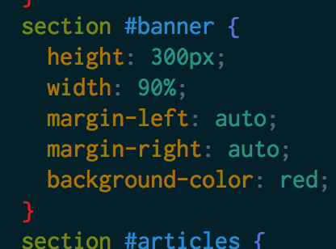
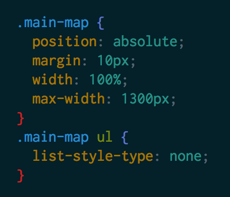

Classes vs IDs
How to choose a selector
June 21, 2015
This week, we learned about the basics of writing websites using HTML and CSS. HTML (HyperText Markup Language) is the basic framework that all websites use to show content, and CSS (Cascading Style Sheet) is the way that all the information is formatted or "styled" such that it looks nice on the page. In order for CSS to work, however, it has to be able to select the parts of the page being styled. This is done through the use of "selectors" that relate the page element to a set of attributes given in the CSS file. These selectors come in a few forms, but there are two very important ones: IDs and classes.
IDs are used when a style is only going ot be used in one place. The idea is that, like an ID for a person, you only have one and that one ID is supposed to only reference one individual thing. In the HTML, an ID is designated with a tag attribute of id="name", where "name" is the name of the ID you plan to use. Once this is put into a document, the CSS accesses this tag through the use of the # character, as in:
#selector {
attribute: value;
}
This would apply the value to an attribute for the tag found with an ID equal to selector. An example of IDs used in my code fo rthis week can be seen here:

I used an ID here because there is only one banner on my site, and there should only ever be one.
While classes are similar to IDs, their use is somewhat different. Classes are supposed to be used when a lare portion of a site needs to be formatted the same way. For example, in my code from this week:  I used a class here because I knew that the main section of my page would all need to be of the same format, despite being made up of many tags. This main-map consisted of many separate parts, and having to put in a bunch of smaller selectors would be messy, so I used a class to keep it all together nicely and minimize the extra code. It's also important to note that while the syntax of a class selection in CSS is similar, it doesn't use a # character, but a . instead.